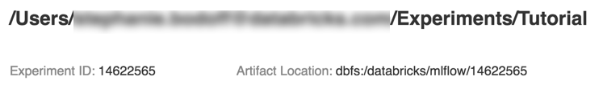

Run MLflow Projects on Databricks
An MLflow Project is a format for packaging data science code in a reusable and reproducible way. The MLflow Projects component includes an API and command-line tools for running projects, which also integrate with the Tracking component to automatically record the parameters and git commit of your source code for reproducibility.
This article describes the format of an MLflow Project and how to run an MLflow project remotely on Databricks clusters using the MLflow CLI, which makes it easy to vertically scale your data science code.
MLflow Project execution is not supported on Databricks Community Edition.
MLflow project format
Any local directory or Git repository can be treated as an MLflow project. The following conventions define a project:
The project’s name is the name of the directory.
The software environment is specified in
python_env.yaml, if present. If nopython_env.yamlfile is present, MLflow uses a virtualenv environment containing only Python (specifically, the latest Python available to virtualenv) when running the project.Any
.pyor.shfile in the project can be an entry point, with no parameters explicitly declared. When you run such a command with a set of parameters, MLflow passes each parameter on the command line using--key <value>syntax.
You specify more options by adding an MLproject file, which is a text file in YAML syntax. An example MLproject file looks like this:
name: My Project
python_env: python_env.yaml
entry_points:
main:
parameters:
data_file: path
regularization: {type: float, default: 0.1}
command: "python train.py -r {regularization} {data_file}"
validate:
parameters:
data_file: path
command: "python validate.py {data_file}"
Run an MLflow project
To run an MLflow project on a Databricks cluster in the default workspace, use the command:
mlflow run <uri> -b databricks --backend-config <json-new-cluster-spec>
where <uri> is a Git repository URI or folder containing an MLflow project and <json-new-cluster-spec> is a JSON document containing a new_cluster structure. The Git URI should be of the form: https://github.com/<repo>#<project-folder>.
An example cluster specification is:
{
"spark_version": "7.3.x-scala2.12",
"num_workers": 1,
"node_type_id": "i3.xlarge"
}
If you need to install libraries on the worker, use the “cluster specification” format. Note that Python wheels must be uploaded to DBFS and specified as pypi dependencies. For example:
{
"new_cluster": {
"spark_version": "7.3.x-scala2.12",
"num_workers": 1,
"node_type_id": "i3.xlarge"
},
"libraries": [
{
"pypi": {
"package": "tensorflow"
}
},
{
"pypi": {
"package": "/dbfs/path_to_my_lib.whl"
}
}
]
}
Important
.eggand.jardependencies are not supported for MLflow projects.Execution for MLflow projects with Docker environments is not supported.
You must use a new cluster specification when running an MLflow Project on Databricks. Running Projects against existing clusters is not supported.
Using SparkR
In order to use SparkR in an MLflow Project run, your project code must first install and import SparkR as follows:
if (file.exists("/databricks/spark/R/pkg")) {
install.packages("/databricks/spark/R/pkg", repos = NULL)
} else {
install.packages("SparkR")
}
library(SparkR)
Your project can then initialize a SparkR session and use SparkR as normal:
sparkR.session()
...
Example
This example shows how to create an experiment, run the MLflow tutorial project on a Databricks cluster, view the job run output, and view the run in the experiment.
Requirements
Install MLflow using
pip install mlflow.Install and configure the Databricks CLI. The Databricks CLI authentication mechanism is required to run jobs on a Databricks cluster.
Step 1: Create an experiment
In the workspace, select Create > MLflow Experiment.
In the Name field, enter
Tutorial.Click Create. Note the Experiment ID. In this example, it is
14622565.
Step 2: Run the MLflow tutorial project
The following steps set up the MLFLOW_TRACKING_URI environment variable and run the project, recording the training parameters, metrics, and the trained model to the experiment noted in the preceding step:
Set the
MLFLOW_TRACKING_URIenvironment variable to the Databricks workspace.export MLFLOW_TRACKING_URI=databricks
Run the MLflow tutorial project, training a wine model. Replace
<experiment-id>with the Experiment ID you noted in the preceding step.mlflow run https://github.com/mlflow/mlflow#examples/sklearn_elasticnet_wine -b databricks --backend-config cluster-spec.json --experiment-id <experiment-id>
=== Fetching project from https://github.com/mlflow/mlflow#examples/sklearn_elasticnet_wine into /var/folders/kc/l20y4txd5w3_xrdhw6cnz1080000gp/T/tmpbct_5g8u === === Uploading project to DBFS path /dbfs/mlflow-experiments/<experiment-id>/projects-code/16e66ccbff0a4e22278e4d73ec733e2c9a33efbd1e6f70e3c7b47b8b5f1e4fa3.tar.gz === === Finished uploading project to /dbfs/mlflow-experiments/<experiment-id>/projects-code/16e66ccbff0a4e22278e4d73ec733e2c9a33efbd1e6f70e3c7b47b8b5f1e4fa3.tar.gz === === Running entry point main of project https://github.com/mlflow/mlflow#examples/sklearn_elasticnet_wine on Databricks === === Launched MLflow run as Databricks job run with ID 8651121. Getting run status page URL... === === Check the run's status at https://<databricks-instance>#job/<job-id>/run/1 ===
Copy the URL
https://<databricks-instance>#job/<job-id>/run/1in the last line of the MLflow run output.
Resources
For some example MLflow projects, see the MLflow App Library, which contains a repository of ready-to-run projects aimed at making it easy to include ML functionality into your code.